A Level MediaComponent 1 · Section A & B · NewspapersScore: 0 / 0
Component 1 · Section A (ML & Rep) · Section B (Industry & Audiences)
Newspapers — The Mirror & The Times
The two set-text newspapers compared — a left-leaning tabloid (Daily Mirror) and a right-leaning quality paper (The Times) — across Media Language, Representation, Industry and Audience. Answer the quick-checks to build your score.
The set texts — a comparison pair
The Mirror vs The Times
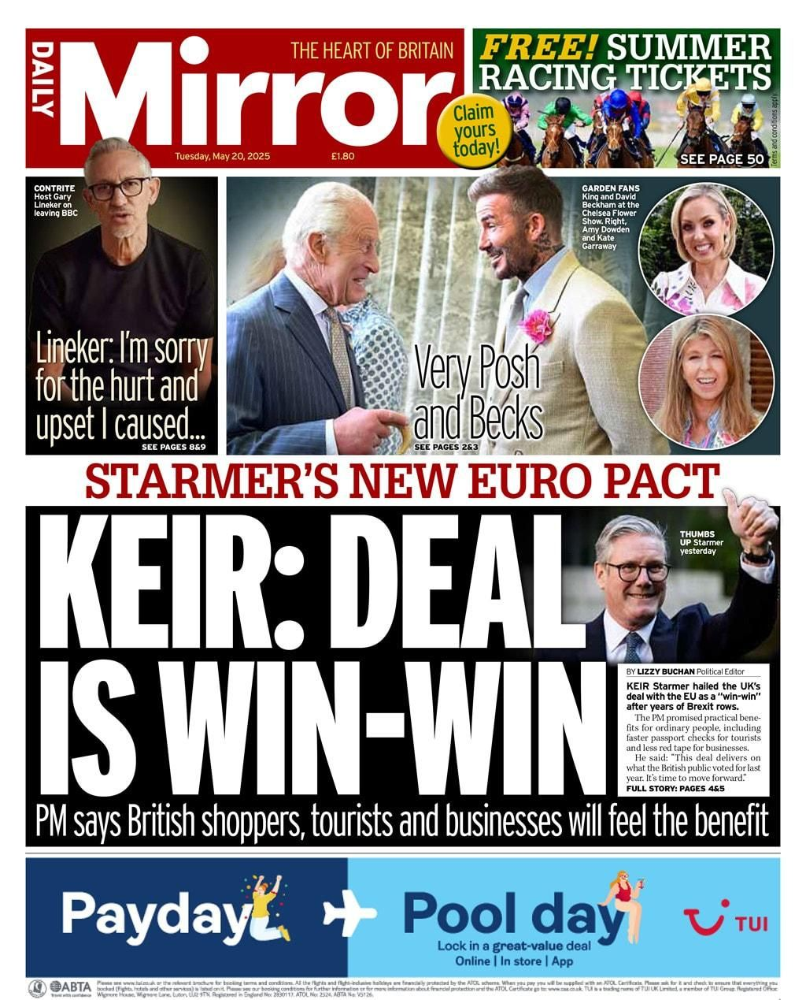
Daily Mirror front page, 20 May 2025 — “KEIR: DEAL IS WIN-WIN” (left-leaning tabloid) 🔍 tap to enlarge
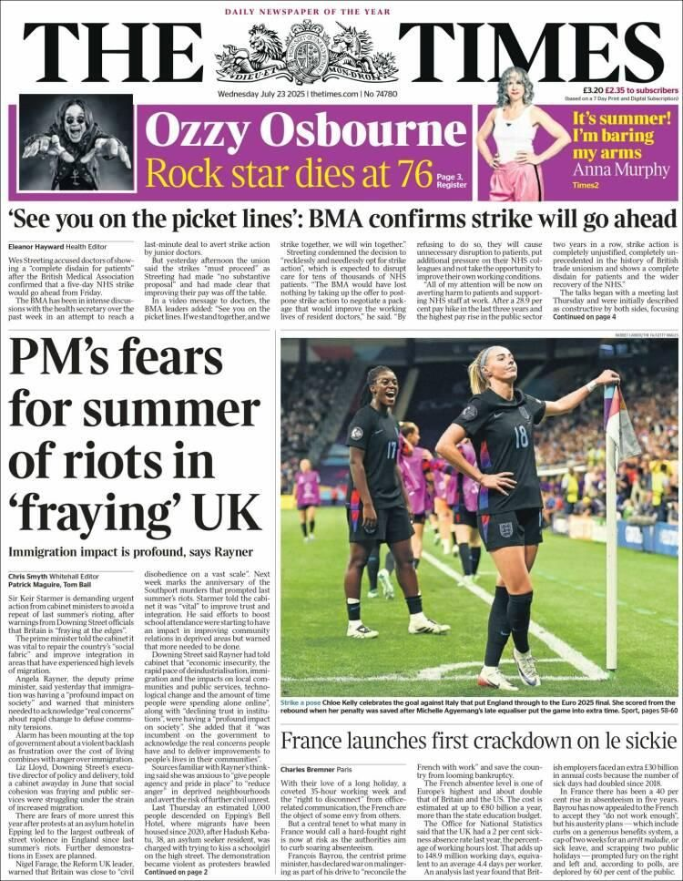
The Times front page, 23 July 2025 — “PM’s fears for summer of riots” (right-leaning quality paper) 🔍 tap to enlarge
Newspapers are studied as a comparison pair. You study the front page and a linked article of the Daily Mirror, and the front page of The Times (plus complete editions and selected website pages).
Daily Mirror — a tabloid ("red-top"), left-leaning and Labour-supporting, owned by Reach plc (formerly Trinity Mirror). Established 1903 — originally a paper for women, "to act as a mirror on feminine life", quickly redesigned for a broader, lower-middle/working-class readership. Slogan "The Heart of Britain"; has backed Labour at every general election since 1945; main rival is The Sun. Set edition: 20 May 2025 — front page + linked double-page spread on Starmer's EU "reset" deal.
The Times — a "quality" / broadsheet, right-leaning (though less explicitly than the tabloids), owned by News UK, part of News Corp (Rupert Murdoch, who handed control to son Lachlan Murdoch in 2023). First published 1785 — the oldest UK national newspaper still in existence. Masthead crest carries the royal motto "Dieu et Mon Droit" and the lion & unicorn; principles "Passionate, Principled, Purposeful"; won "Daily Newspaper of the Year" at the 2025 Press Awards. Set edition: 23 July 2025 — front page led by "PM's fears for summer riots in 'fraying' UK".
Inside the set editions — what's actually on the page
Examiners reward precise reference to the set pages. Know exactly what each edition contains:
The Times — 23 July 2025 front page. Three news stories: the lead is Keir Starmer's concerns over potential summer riots (linked to the cost of living, immigration and community tensions) — headline "PM's fears for summer riots in 'fraying' UK"; a second story on the BMA doctors' strike (Health Secretary Wes Streeting, quote "See You On The Picket Lines"); and a third, lighter story on France's "le sickie" work-absenteeism. The standalone image is footballer Chloe Kelly's signature celebration after taking England into the Euro 2025 final (caption "Strike a Pose"). A plug promotes an article on the death of Ozzy Osbourne and an Anna Murphy fashion piece in the Times2 supplement.
Daily Mirror — 20 May 2025 front page + double-page spread. The main story is Starmer's post-Brexit "reset" deal with the EU; on the spread he is pictured with Ursula von der Leyen (President of the European Commission). Positive red-top framing — strapline "pact", subheading "PM says British shoppers, tourists and businesses will feel the benefit", central-image pun "NICE TO SEE EU", and boxes headed "How Britain is set to benefit from accord". Opinion pieces from columnist Kevin Maguire (pejorative "Brextremists frothing at the mouth") and David Lammy (then Foreign Secretary). Other front-page stories: Gary Lineker leaving the BBC (sympathetic, caption "Contrite") and a celebrity pun story on the Chelsea Flower Show (King Charles, David Beckham, Kate Garraway, Amy Dowden — "Very Posh and Becks").
Context — regulation & decline
Newspapers date to the mid-17th century and were the primary news source until 20th-century broadcasting.
They are largely self-regulating: the regulator is IPSO (Independent Press Standards Organisation, formerly the PCC). IPSO is not backed by the government and is funded by the industry itself; it is "anti-Leveson" in approach. Joining is not compulsory, but both the Times and the Mirror — and most UK publishers — choose to be regulated by it.
The Leveson Inquiry (2011) followed the phone-hacking scandal (News of the World); it recommended tighter controls, but little changed beyond the PCC becoming IPSO.
Unlike broadcast news, newspapers do NOT have to be impartial — they may show their political bias.
Print circulation is in decline; papers have moved online to survive.
⚡ Quick check — The pair & context
Which pairing correctly matches paper, format and politics?
Who owns The Times?
What is the UK's press regulator, and how strong is it?
Unlike TV news, UK newspapers…
Which is the older title, and roughly when was it founded?
Media Language
Tabloid vs broadsheet conventions
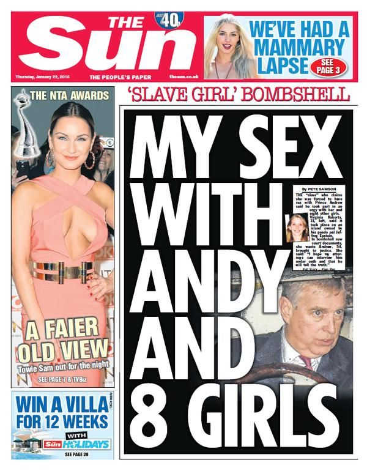
Tabloid conventions: The Sun — sensational splash, huge image, punning language 🔍 tap to enlarge
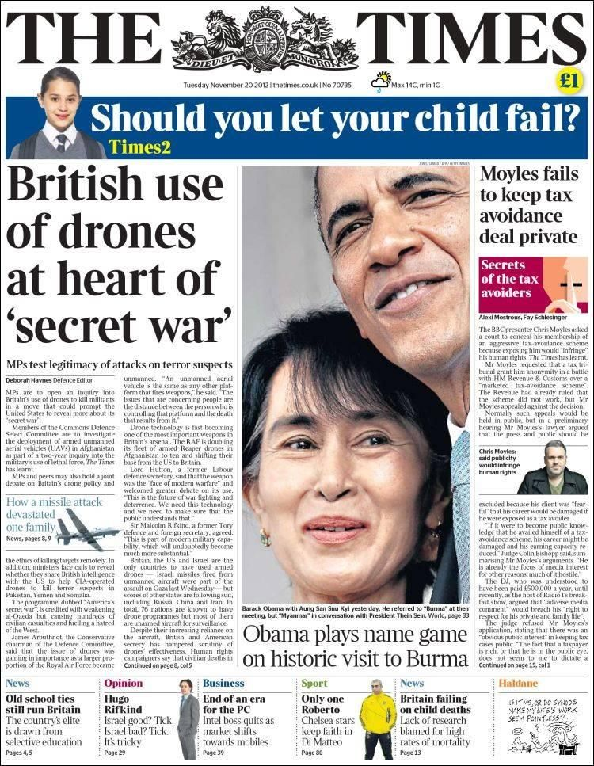
Broadsheet conventions: The Times — multiple stories, dense copy, formal register 🔍 tap to enlarge
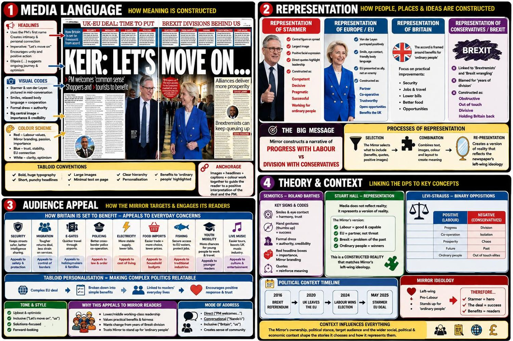
Full framework analysis of the Mirror set text (ML · Rep · Audience · Theory) 🔍 tap to enlarge
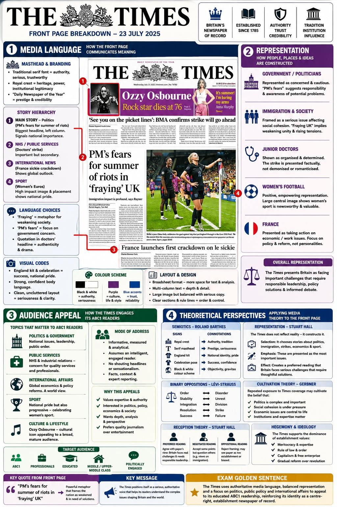
Full framework analysis of the Times set text (ML · Rep · Audience · Theory) 🔍 tap to enlarge
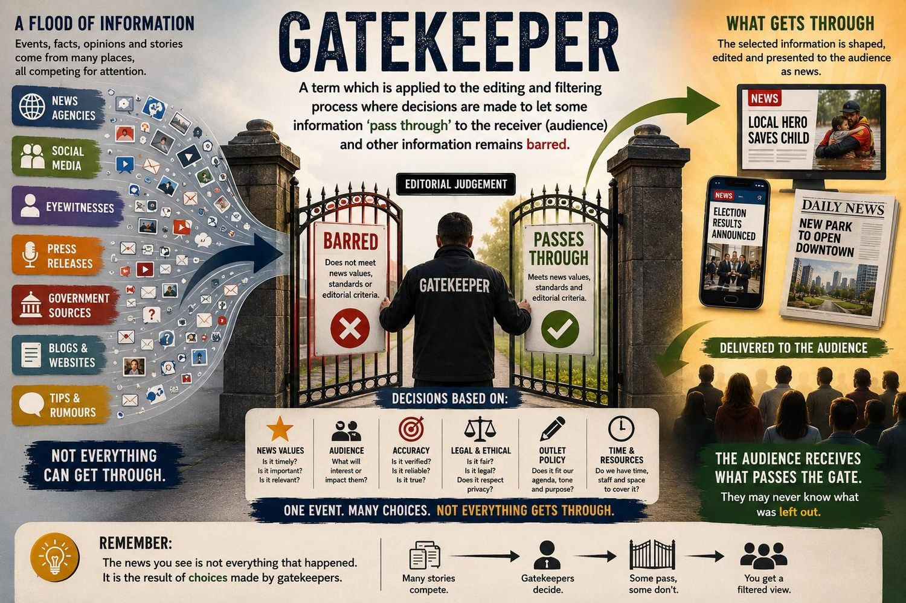
News values as gatekeeping (Galtung & Ruge): what “gets through the gate” 🔍 tap to enlarge
Compare how each front page is constructed — masthead, splash/lead, headline, kicker, standfirst, pull-quote, mode of address, colour and image size.
Mirror (tabloid): one dominant splash in huge bold type over a large, positive image of Starmer (thumbs up), puns ("NICE TO SEE EU", "Very Posh and Becks"), emotive, colloquial, direct address, celebrity content and a free-gift promo. The red masthead ("red-top") and red strapline/pull-quotes carry connotations of the UK (red, white and blue) and of Labour. Sensational and accessible — image-led rather than text-led.
Times (quality): the masthead crest ("Dieu et Mon Droit", lion & unicorn) and the "Daily Newspaper of the Year" claim connote tradition, Britishness and reliability. Several stories share the page, with far more copy, a formal register, named journalists (bylines) and few subheadings — text-led, serious and informative. Softer "human interest" and lifestyle content is separated into the Times2 supplement (flagged by the front-page plug).
Applying theory
Galtung & Ruge (1973) — News Values: a set of values acting as gatekeeping, deciding how much prominence a story gets (negativity, elite people/nations, proximity, etc.).
Barthes — anchorage: headline and caption fix the meaning of the front-page image.
The Mirror's single dominant splash, superlative headline ("WIN-WIN") and large, positive image of Starmer anchor a celebratory, pro-Labour reading. The Times' multi-story layout, denser copy and formal register (with the Rayner "riots" lead) construct a more serious, sober news agenda — the same period, different news values (Galtung & Ruge) and different gatekeeping.
⚡ Quick check — Media Language
The main, dominant front-page story is called the…
Galtung & Ruge's News Values function as a form of…
A pun headline like "Very Posh and Becks" and a huge single splash are conventions of a…
When the headline and caption fix the meaning of a front-page photo, this is…
Which is a convention of The Times as a "quality" paper?
Sort it: convention of the MIRROR (tabloid) or THE TIMES (quality)?
A single huge splash headline dominating the page
Several serious news stories sharing the front page
Punning headlines and celebrity content
A formal register with named-journalist bylines
A free-gift promotion and a large emotive image
Representation
Bias, ideology & selection
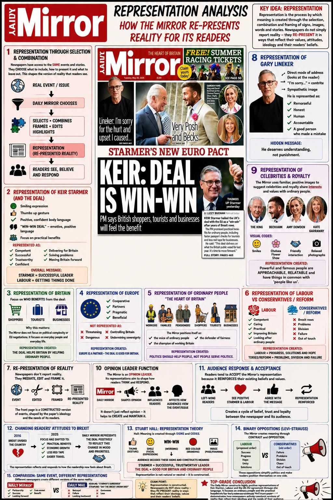
Representation analysis: how the Mirror re-presents Starmer for its readers 🔍 tap to enlarge
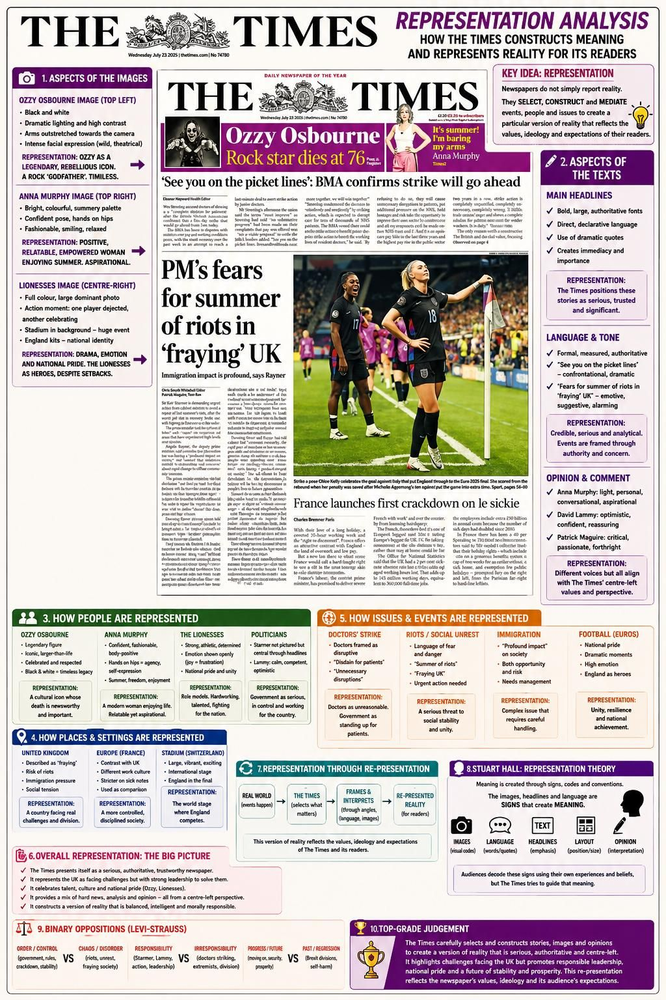
Representation analysis: how The Times constructs meaning on its front page 🔍 tap to enlarge
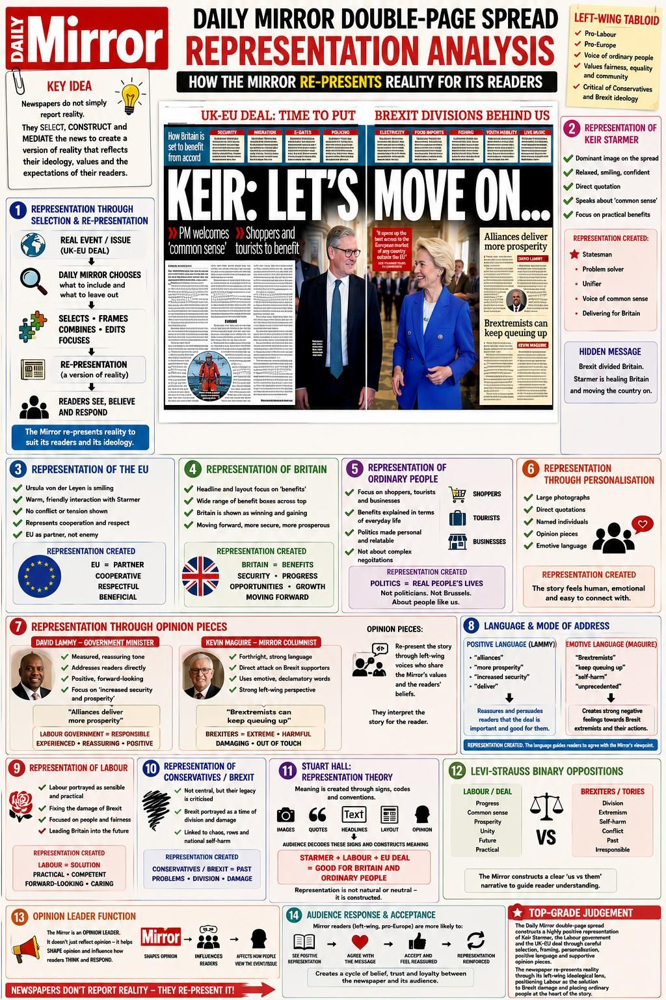
Representation analysis of the Mirror’s linked double-page spread (“KEIR: LET’S MOVE ON”) 🔍 tap to enlarge
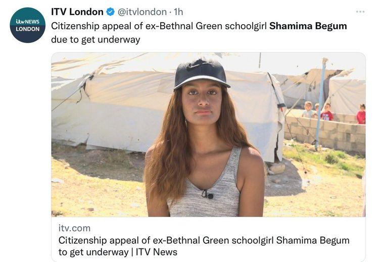
Constructed differently: ITV frames Shamima Begum as “one of us” 🔍 tap to enlarge
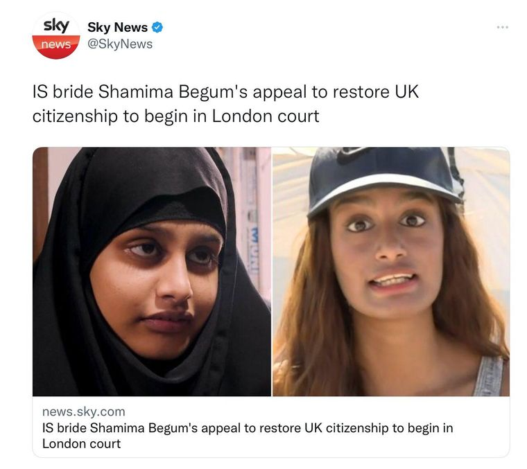
…while Sky frames her as an “IS bride” — opposite representation 🔍 tap to enlarge
Each paper constructs its representation through selection and combination — which stories, images, words and viewpoints are chosen, reflecting the paper's ideology.
The Mirror represents Keir Starmer positively ("WIN-WIN", "THUMBS UP"), aligning with its Labour-supporting ideology. The Times leads on a more anxious, critical agenda ("PM's fears for summer of riots"), reflecting a Conservative, establishment framing.
Newspapers act as gatekeepers, importing ideology through language and image — they are not "windows on the world" but carefully constructed versions of reality (mediation).
Same story, opposite representation — a perfect comparison point: on the Mirror's EU-deal story, the right-leaning Daily Mail ran "Starmer's Surrender" / "Day the Brexit Dream Died", while the Mirror framed it as a "WIN-WIN". Selection and combination construct the paper's values, attitudes and beliefs.
Ideology also shows in the opinion pieces and emotive/pejorative language: Mirror columnist Kevin Maguire attacks "Brextremists" and "lying con-man Boris Johnson's bad Brexit"; the Times uses subtler, "implicit" criticism ("alarm has been mounting", "'sources'"). Applying Stuart Hall, the Mirror uses stereotypical representations of the government while positioning ordinary people and "subordinate groups" as those it speaks up for.
Applying theory
George Gerbner — Cultivation: repeated patterns of representation over time shape how audiences see the world — so a reader's regular paper cultivates a particular worldview (e.g. of politicians, immigration or "Broken Britain").
Through selection and combination, the Mirror's positive framing of Starmer and the Times' "riots"/immigration lead construct opposing ideological representations of the same political moment. Applying Gerbner, a loyal reader exposed repeatedly to their paper's framing has that worldview cultivated over time, reinforcing the paper's political position.
⚡ Quick check — Representation
The Mirror's "WIN-WIN / THUMBS UP" framing of Starmer mainly reflects its…
"Repeated patterns of representation over time shape how audiences see the world." This is…
Newspapers construct their representations chiefly through…
Industry (Section B)
Ownership & integration
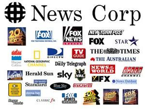
Vertical integration: Rupert Murdoch’s News Corp — The Times sits within this conglomerate 🔍 tap to enlarge
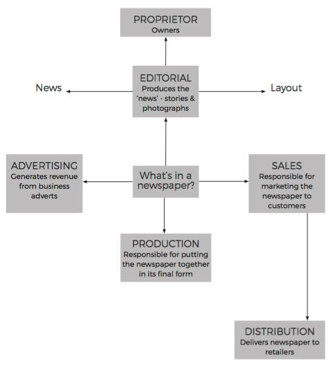
The five key departments of a newspaper 🔍 tap to enlarge
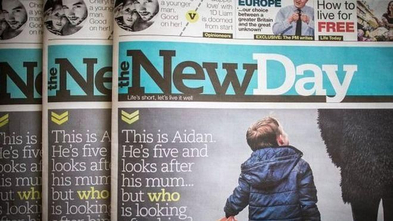
Print in decline: The New Day launched and closed within 9 weeks (2016) 🔍 tap to enlarge
Daily Mirror → Reach plc (formerly Trinity Mirror, 1999–2018) — the UK's largest commercial national & regional publisher, with 120+ titles including the Daily Record, Daily Express, Manchester Evening News and Liverpool Echo. The Times → News UK (also The Sunday Times, The Sun, talkSPORT, Times Radio, Virgin Radio), part of News Corp — Rupert Murdoch's global conglomerate (HarperCollins, The Wall Street Journal), whose control passed to son Lachlan Murdoch in 2023.
Digital strategy differs. The Times was one of the first UK papers to introduce an online paywall/subscription; in 2016 it combined its site with the Sunday Times and moved to an edition-based digital format; News UK launched Times Radio (2020); the app was relaunched in April 2025. The Mirror runs the free, ad-funded "Mirror Online" (sections: News, Politics, Football, Celebs, TV) plus a "Got a Story" citizen-journalism section.
Horizontal integration: buying similar companies to form larger groups. Vertical integration: merging across media areas to form conglomerates (e.g. News Corp) — enabling cross-platform marketing and synergy. News Corp was later split into two companies over concerns about monopolising the industry.
A newspaper has five key departments (e.g. editorial, advertising, production, distribution, sales/marketing).
Print is in steep decline (tracked by ABC, the Audit Bureau of Circulations): the Mirror's average circulation was 166,472 in December 2025 — down 19.1% year-on-year, and the once-best-selling tabloid is now outsold by the free Metro (952,332). The New Day launched and closed within 9 weeks in 2016. The Times keeps its ABC data private, but News UK reports (2025): 15.1m readers/month, 640,000 digital-only subscribers, 416,000 app users.
Citizen journalism has partly democratised production, shifting some control away from big institutions.
Applying theory — power & ownership
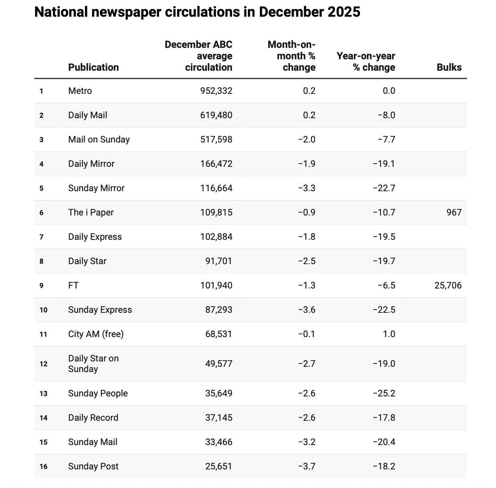
National newspaper circulations (ABC data) — print in steep decline 🔍 tap to enlarge
Curran & Seaton: the media is controlled by a small number of companies driven by profit and power, which limits variety, creativity and quality — while more diverse ownership creates conditions for more varied productions. (The Mirror is "a relatively lone voice in a largely right-wing press".)
Hesmondhalgh — Cultural Industries: companies minimise risk and maximise audiences through vertical and horizontal integration and by formatting products. The Times is "financially protected" inside News Corp; Reach diversifies into regional news and digital classifieds/marketing.
Livingstone & Lunt — Regulation: an underlying struggle between protecting citizens (from harmful material) and serving consumers (choice, press freedom). After the phone-hacking scandal and Leveson, the power of firms like News Corp and digital convergence has put traditional regulation "at risk".
Pluralists argue companies chase profit by pleasing audiences, so a range of papers represents a range of views — the industry responds to "the will of the people". Marxists argue concentrated ownership lets the powerful spread their ideology and maintain class structures, creating "false needs" and "false consciousness".
The Times sits within Murdoch's News Corp — a vertically integrated conglomerate — supporting Curran & Seaton and the Marxist view that concentrated ownership lets powerful interests project a Conservative ideology. A pluralist would counter that the left-leaning Mirror (Reach plc) and other titles ensure a range of views survives, so the industry still reflects diverse audience demand.
⚡ Quick check — Industry
Which correctly matches owner to paper?
A conglomerate like News Corp owning companies across different media platforms is an example of…
The New Day launching and closing within 9 weeks in 2016 illustrates…
Which view argues concentrated ownership lets the powerful spread their ideology and maintain class structures?
UK newspaper circulation figures are audited by…
The Daily Mirror's owner, Reach plc, was previously known as…
Which figure shows print's steep decline for the Mirror?
Audience (Section B)
Who reads each paper?
Daily Mirror — C2DE, over 35, working-class Labour supporters; concerned with social justice and public services. The Times — ABC1, over 35, well-educated and affluent, centre/right; in psychographic terms the "Succeeder" group, of high social status, who engage with detailed political analysis.
Each paper states a mission that flatters its audience. The Mirror: "to make sense of a rapidly changing world for our readers… to stand up for the underdog against authority". News UK/The Times: "we represent, reflect and reach the nation… so they can make decisions based on trusted information."
Online reach is now huge even as print falls: Mirror Online was the 4th most-read UK news website in December 2025 (20.5m monthly readers); the Times reports 17.5m monthly unique visitors and 47m podcast listeners across the Times & Sunday Times.
The Mirror uses campaigns to bond with readers — e.g. Hillsborough justice, homelessness, organ-donation law change, and the 2025 "Missed" campaign with the charity Missing People (shortlisted for a "Making A Difference Award"). Its editorial voice is "The Voice of the Mirror".
Millennials (born ~1982–2002) increasingly get news free online and via social media, while Boomers remain more likely to buy print — a key driver of print decline.
"Newspapers will always pander to their readers' prejudices" (Yes Minister, 1981) — papers construct and reinforce the views their audience already holds.
Applying theory
Stuart Hall — Reception: producers encode meaning; audiences decode it as preferred, negotiated or oppositional. A loyal Mirror reader takes the preferred (pro-Labour) reading; a Conservative reader might take an oppositional one.
Clay Shirky — "the end of audience": the internet turns passive audiences into active prosumers who like, comment, share and produce news — though institutions still hold some power over interaction (e.g. moderating comments).
Hall explains why the same front page is decoded differently: a C2DE Labour-leaning Mirror reader accepts the preferred pro-Starmer reading, while a Times reader may take an oppositional view. Shirky adds that online, these readers are now prosumers — commenting and sharing — blurring the line between audience and producer, though moderation shows institutions retain some control.
⚡ Quick check — Audience
Which best matches paper to core readership?
Hall's reception theory describes readings as…
Clay Shirky argues the internet has…
A major reason for print decline is that…
In psychographic terms, which best fits The Times' core reader?
🎯 Final mission — the one-liners you must be able to drop
Mirror = left tabloid (Reach plc) · Times = right quality (News UK/Murdoch)
Set text: Times front page · Mirror front page + linked article
IPSO (self-reg) · Leveson 2011 · papers can show bias